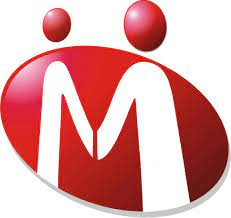

INDIAMART
IndiaMART InterMESH Ltd is an Indian e-commerce company headquartered in Noida. It provides B2B and customer to customer sales services via its web portal.[3] a business-to-business portal to connect Indian manufacturers with buyers

IndiaMART was launched in 1996 as a directory of the websites for customers in the Delhi-NCR region by two cousins Dinesh Agarwal and Brijesh Agrawal.[6][7][8] At that time India had only 15,000 internet users.[9] By 1999, the directory had more than 1000 listings.[10]
After overcoming the dot-com bust, in 2008–09 when the recession hit the US, the company decided to pivot the focus from export oriented business to India-focused B2B market and raised $10 million in Series A round funding from Intel Capital, a part of which was invested in IndiaMART, One97 Communications and Global Talent Track.[11][12][13]
In November 2014, IndiaMART started promotional campaigns featuring Indian film actor Irrfan Khan as its brand ambassador.[14]
In March 2016, it raised Series C Funding from Amadeus Capital Partners and Quona Capital to scale up the activities of IndiaMART and Tolexo.[15]
In 2016 and 2019, IndiaMART invested in ProcMart and Vyapar.[16][17]
In June 2018, IndiaMART filled draft papers with SEBI to raise ₹600 crore through IPO and list on NSE and BSE.[18] In June 2019, IndiaMART went public[19] via an IPO of ₹474 crore.[20][21] The issue was oversubscribed by 36 times by the end of the final day of the bidding.[21] IndiaMART became the first online B2B marketplace to go public in India, and the first company launch its IPO in the second tenure of Modi government.[22][23]
As of 2019, IndiaMART was the largest Indian e-commerce platform for businesses with about 60% market share, according to KPMG.[23]
Financials
IndiaMart's revenue registered a 29% CAGR over FY19 to ₹507 crore while it reported a net profit of ₹20 crore in FY19, according to a note from Angel Broking.[24] It has zero debt and sizeable cash balance. As of 31 March 2019, the company had 8.27 crore (82.70 million) registered buyers and had 55.5 lakh (5.55 million) supplier storefronts in India and expect to maintain a compounded annual growth rate (CAGR) of 29 per cent for the next two years.[25]
It handles 97,000 product categories — ranging from machine parts, medical equipment and textile products to cranes, from thousands of towns and cities of India.[23] Agfa HealthCare India, Case New Holland Construction Equipment (India), Hilti India, JCB India and Nobel Hygiene are a few big suppliers on the company's marketplace.[26]
IndiaMART had an aggregate of 32.5 crore (325.8 million), 55.2 crore (552.6 million) and 72.3 crore (723.5 million) visits in fiscals 2017, 2018 and 2019, respectively, of which 20.4 crore (204.8 million), 39.6 crore (396.9 million) and 55 crore (550.3 million) were mobile traffic, which is 63%, 72% and 76% of total traffic, respectively.[27] The IndiaMART app has more than 1 crore (10 million) downloads with a 4.7 App rating on Android.